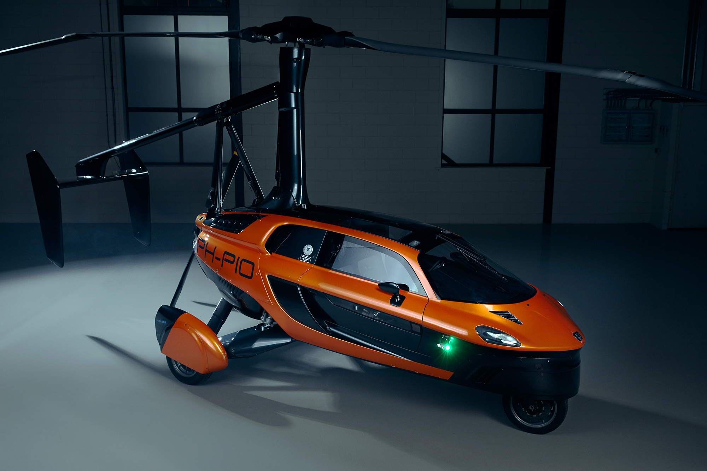
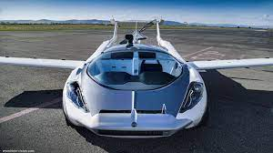
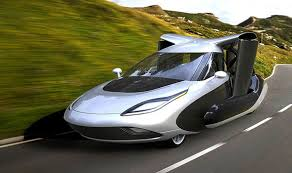
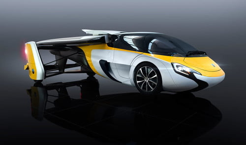
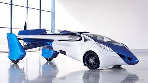

HeliCar Designes

- One such is made by AirCar and it has completed an inter-city test flight for the first time.
- This was also the first time any flying car completed an inter-city flight.
- The car flew between two international airports in Nitra and Bratislava in Slovakia on June 28.
- The flying car took 35 minutes to cover the distance.
- (Check out more pics of AirCar flying car here)
-
-
-
- AirCar in a press release has said that after landing,
- at a click of a button the aircraft transformed into a sportscar in less than three minutes.
- The flying car comes with a 160 hp BMW engine and it also has a fixed propeller and a ballistic parachute.
- According to AirCar, the flying car is capable of flying 1,000 km at an altitude of 8,200 ft.
- It can fly at a speed of 170 kmph.
-
-
-
- It has already clocked 40 hours of flying till now. Also, during its test flights,
- the flying car has performed steep steep 45 degree turns and stability and manoeuvrability testing.
- It takes around two minutes and 15 seconds to take off and convert from a car to an aircraft, claims the company.
- Flying cars have been in discussion for quite some time.
-
-
-
- These vehicles are being considered as the future medium of city commuting and inter-city transport as the roads are becoming increasingly congested.
- Flying cars can help in decongesting roads and reduce travel time as well.
- Ride-hailing services like Uber have already announced that they are working on flying
- cars that would be used in future commuting and inter-city transportation.
- This flying car based ride-hailing system is expected to bring a major change in the mobility industry in near future.
- Among the established automakers, some OEMs like Hyundai too are working on flying car technology.
HeliCar Designes




Mumbai Flying Car
There is problem of traffic in mumbai to solve that
problem helicar can be maded in india so many can travel
in sky so there will be less traffic on road ,but the heli car should
work on electricity not at petroal so there will be no pollution in sky
soon in future we will se heli car in mumbai.